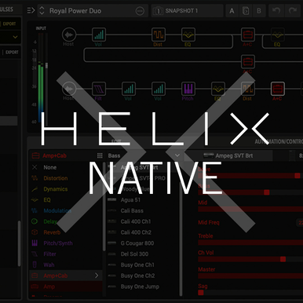

Our Gear
🎸 Guitars
The Squier Debut Stratocaster delivers classic Strat feel and tone with an alder body, bolt-on maple neck, and three single-coil pickups. Bright and articulate, perfect for pop, rock, and blues. Comfortable for both practice and performance.
The Yamaha Pacifica 112J offers versatile tone and smooth playability. Alder body, bolt-on maple neck, rosewood fingerboard, H-S-S pickups. Ideal for pop, rock, blues, and funk.
The Yamaha SG3 12-String produces a rich, shimmering sound. Mahogany body, maple neck, rosewood fingerboard. Perfect for folk, pop, and acoustic rock.
🎧 IEM & Mic
The CCA Polaris hybrid IEM delivers clear, detailed sound with strong lows, precise monitoring, and excellent instrument separation.
The Shure SM58 is the industry-standard dynamic vocal mic, durable and reliable, delivering clear, natural vocals for live or studio use.
💻 DAWs & Plugins
Reaper is a lightweight, flexible DAW supporting audio/MIDI formats and VST/AU plugins. Powerful recording, mixing, and mastering with low resource usage.

Helix Native is a professional amp/effects plugin. Offers hundreds of presets, amp models, and cab IR options, ideal for recording and production.
🎚 Effects & Amps
The Joyo DC15 compact amp delivers clean and crunchy tones with 15W power. Lightweight and portable, great for practice and small gigs.
The M-Vave Tank G multi-effects processor offers amp modeling, cabinet simulation, and diverse effects. USB-enabled for editing and recording, flexible for practice, studio, or live.